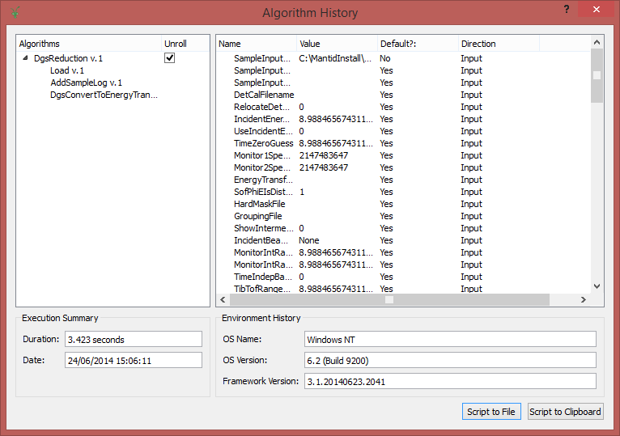

Workflow Algorithm#
A workflow algorithm is a special subset of algorithms that perform higher level tasks by solely making use of other algorithms. These algorithms inherit from a specialized base class DataProcessorAlgorithm, to indicate that these are indeed WorkflowAlgorithms. Due to the special functions that can be applied to these algorithms it is vital that they do not alter the data in any way directly themselves and rather use child algorithms to do so.
Special Functions#

NestedHistory.png#
Nested History#
As workflow algorithms are effectively just a collection of sub algorithms tied together with some logic it is possible to represent them as a simple flow diagram, and extract out the child algorithms from any particular run. The nested history approach on Mantid allow any workflow algorithm to be “unrolled” into the child algorithms that were used by it.
Flow Diagrams#
As workflow algorithms are effectively just a collection of sub algorithms tied together with some logic it is possible to represent them as a simple flow diagram. Each worklow algorithm should provide a flow diagram of it’s operations.
Examples#
Category: Concepts